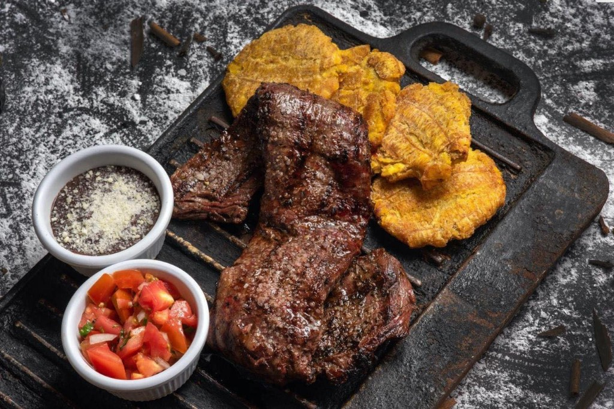

Variedad desde lo tradicional costarricense hasta exquisitos cortes de carne
Comidas tradicionales, opciones rápidas y carnes cocinadas a la perfección. En el corazón de Liberia, Guanacaste.
Por qué visitarnos
Lo que nos distingue, en un mismo lugar.
Asientos al aire libre
Disfruta del patio en un ambiente relajado y familiar.
Buenos cócteles
Coctelería variada para acompañar tu experiencia.
Opciones veganas
Platos vegetarianos y veganos en el menú.

Sabor y calidad en Liberia
Restaurante con variedad de comidas: desde lo tradicional costarricense y comidas rápidas hasta cortes de carne preparados con dedicación. Síguenos en Facebook (@restauranteelpatioliberia) e Instagram (@el_patio_liberia) para novedades y promociones.
Horario: 12:00 a 9:00 p.m. · cierra los domingos.
Explorar menú